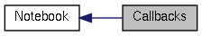

|
Cream-Browser unstable
|
|
Cream-Browser unstable
|
|  |
Functions | |
| static void | notebook_switch_page_cb (Notebook *self, GtkWidget *webview, guint page_num) |
| static void | notebook_signal_title_changed_cb (WebView *webview, const gchar *title, Notebook *obj) |
| static void | notebook_signal_favicon_changed_cb (WebView *webview, GdkPixbuf *favicon, Notebook *obj) |
| static void | notebook_signal_grab_focus_cb (WebView *webview, Notebook *obj) |
This function handles the signal "grab-focus" which is emitted when a WebView request the focus. This handler requests the focus on the Notebook.
| static void notebook_switch_page_cb | ( | Notebook * | self, |
| GtkWidget * | webview, | ||
| guint | page_num | ||
| ) | [static] |
 1.7.4
1.7.4